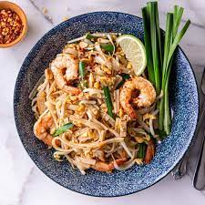

Pad Thai

This amazing Pad Thai recipe is easy and comes together in under 30 minutes. It starts with fresh ingredients including rice noodles, chicken, shrimp, tofu, peanuts, scrambled eggs, and fresh vegetables all tossed together in a delicious homemade pad thai sauce.
Ingredients
- 8 ounces flat rice noodles
- 3 Tablespoons oil
- 3 cloves garlic , minced
- 8 ounces uncooked shrimp, chicken, or extra-firm tofu , cut into small pieces
- 2 eggs
- 1 cup fresh bean sprouts
- 1 red bell pepper , thinly sliced
- 3 green onions , chopped
- 1/2 cup dry roasted peanuts
- 2 limes
- 1/2 cup Fresh cilantro , chopped
For the Pad Thai sauce:
- 3 Tablespoons fish sauce
- 1 Tablespoon low-sodium soy sauce
- 5 Tablespoons light brown sugar
- 2 Tablespoons rice vinegar , or Tamarind Paste
- 1 Tablespoon Sriracha hot sauce , or more, to taste
- 2 Tablespoons creamy peanut butter* (optional)
Steps:
- Make sauce by combining sauce ingredients in a bowl. Set aside.
- Stir Fry: Heat 1½ tablespoons of oil in a large saucepan or wok over medium-high heat. Add the shrimp, chicken or tofu, garlic and bell pepper. The shrimp will cook quickly, about 1-2 minutes on each side, or until pink. If using chicken, cook until just cooked through, about 3-4 minutes, flipping only once.
- Push everything to the side of the pan. Add a little more oil and add the beaten eggs. Scramble the eggs, breaking them into small pieces with a spatula as they cook.
- Add noodles, sauce, bean sprouts and peanuts to the pan (reserving some peanuts for topping at the end). Toss everything to combine.
- Garnish> the top with green onions, extra peanuts, cilantro and lime wedges. Serve immediately!
- Store leftovers in the fridge and enjoy within 2-3 days.
Notes
- Make Ahead Instructions: Cut your protein, and chop veggies ahead of time. Stir sauce ingredients together and refrigerate until ready to use.
- Tamarind Paste: Substitute 2 Tablespoons Tamarind paste in place of the vinegar, for a more authentic sauce. You can buy tamarind online, or at an international foods market.
- Vegan or Vegetarian: Leave out the egg. Use tofu, and substitute the fish sauce for more soy sauce.
- Peanut Butter: In my recipe, I add a big scoop of peanut butter to the sauce because I think it gives the whole dish an added creaminess and boost of flavor.